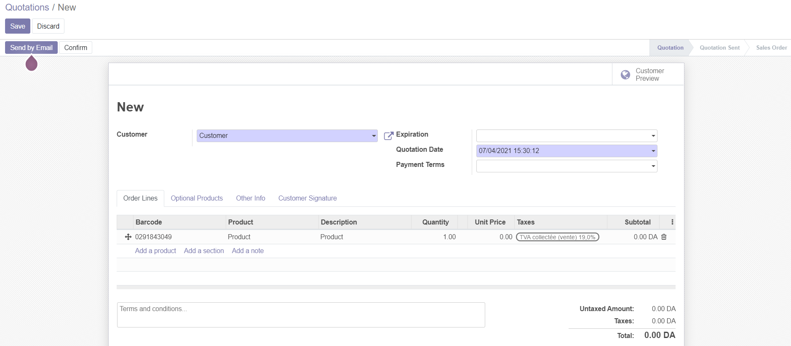
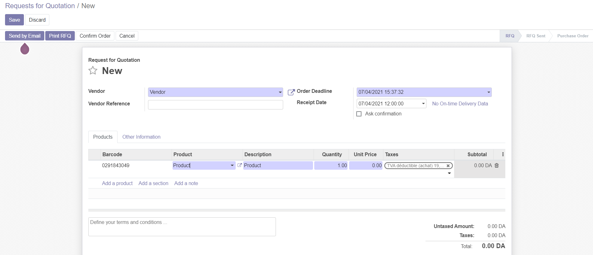

Barcode Module
Odoo 14.0 Community
Author: SARL FOCUS SYSTEM - contact@focussystem.dz
Description
Add the barcode in the sales/purchases lines.
Screens
For each sale, it's possible to retrieve the products through their barcode or their name.

For each purchase, it's also possible to retrieve the products through their barcode or their name.
